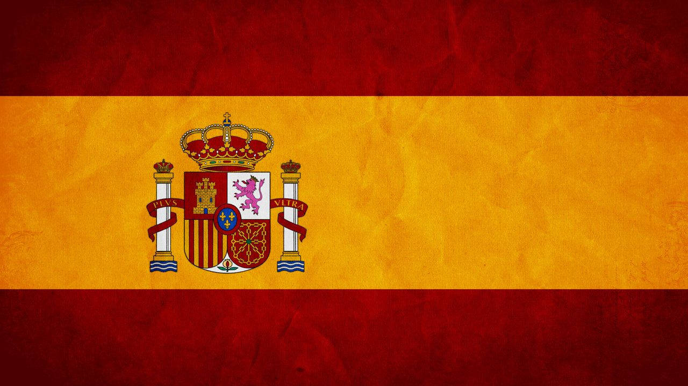
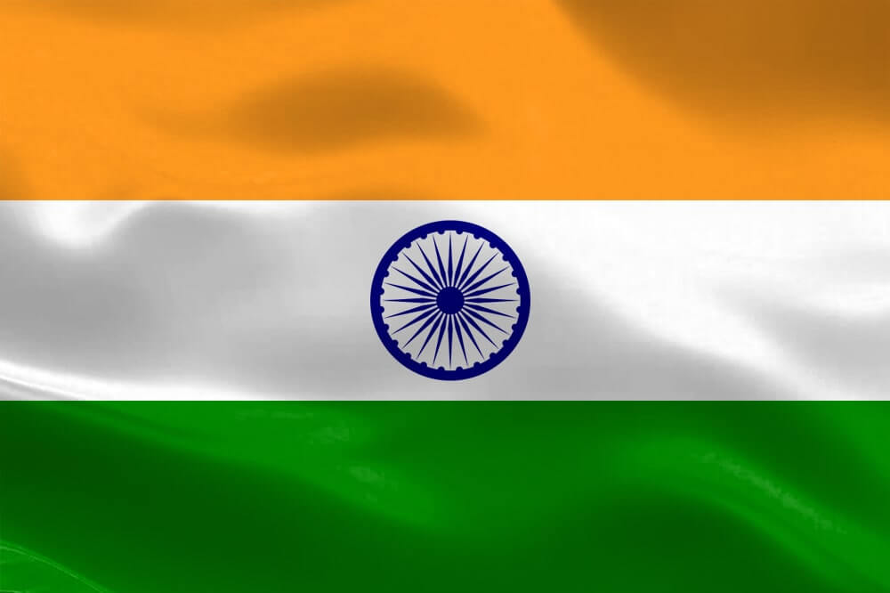
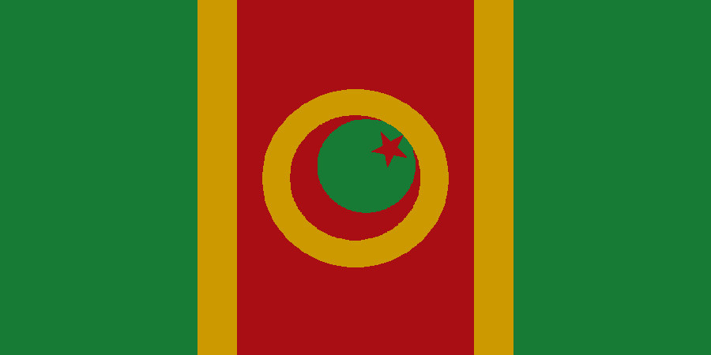

1. China is known to be top 1 Because there is about 1.3 billion native speakers who uses the language Mandarin.Over 16% of the world's population speak a form of Chinese language natively, which make Chinese languages the most spoken by native speakers around the world. There are over 7,100 languages spoken around the world today but incredibly more than 80% of languages are spoken by less than 100,000 native speakers.China is the most populous nation in the world, with 1.28 billion people. One fifth of the planet speaks Chinese. Mandarin Chinese is the mother tongue of over 873 million people, making it the most widely spoken first language in the world.

Spain's enormous colonial expansion took this language not only to the Americas but also to Africa and Asia. Today, there are 21 Spanish-speaking countries in the world, with dozens more that have a significant Spanish-speaking population.
There is 486 millions of native speakers who use this language because it is spread through some of its part. Spain's enormous colonial expansion took this language not only to the Americas but also to Africa and Asia. Today, there are 21 Spanish-speaking countries in the world, with dozens more that have a significant Spanish-speaking population.
English is used as a mother tongue by approximately 400 million people in many countries around the world. Therefore, English is the 3rd most spoken language after Chinese and Spanish. English is the most spoken language in the world, primarily due to the global influences of the former British Empire (succeeded by the Commonwealth of Nations) and the United States.
Hindi ranks fourth globally as a first language, and third when combined with Urdu. It's growing rapidly, becoming India's fastest-expanding language, according to the 2011 census. Due to its vast number of speakers, Hindi is considered to be the fourth most-spoken language in the world, behind languages such as: Chinese. Spanish; and. English.
Because Bengali language is mother tongue of an area which is densely populated. Natuarally it has outnumbered many other state languages. Bengali is spoken by around 25 crores of people, inhabiting in Bangladesh,Indian states of West Bengal,Tripura,Assam, Jharkhond etc. Bengali acquired prominence, over Persian, in the court of the Sultans of Bengal with the ascent of Jalaluddin Muhammad Shah. Subsequent Muslim rulers actively promoted the literary development of Bengali, allowing it to become the most spoken vernacular language in the Sultanate.
